hyperledger白皮书
hyperledger白皮书点击我🖱️开始C-Universal Blockchain白皮书开始C-Universal Blockchain（CUB) 白皮书产品背景一、知识经济的关键：人是最重要的资产二、新商业模式：开放、协作、创新市场需求社区调研学生群体调研教师群体调研市场调研区块链教育行业我们存在的意义发展规划校企合作高校应用场景技术架构产品设计产品介绍产品架构产品功能CUB 积分的消耗和获取CUB 平台的信用规则web 网站前端视频地址精准空投🖱️超级账本 Hyperledger fabricHyperledger fabric(超级账本) 和 Ethereum 对比实现需求存储协议 IPFSPBFT 算法改进策略常见的共识算法对比针对 PBFT 的改进和传统 APP 对比我们的优势传统的 APP 和我们的 DAPP区块链的架构目前国内外一些常见的 DAPP营销策略案例：优秀的作者以及科研者的坚强后盾🎞️应用场景区块链典型应用场景 1：校园网络安全保护场景二：学术资源共享场景三：学分证明信用体制建设场景四：身份认证管理场景五：高校知识产权保护📡联系我们企业微信 c_universal_brockchain@nsddd.topGithub 社区知乎：链学者社区
点击我🖱️
开始
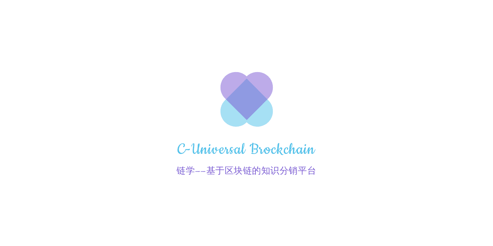
C-Universal Blockchain白皮书
cub（C-Universal Blockchain) 是我们团队现推的 DWeb 或者 DApp 项目
开始
C-Universal Blockchain（CUB) 白皮书
“每一件与众不同的绝世好东西，其实都是以无比寂寞的勤奋为前提的，要么是血，要么是汗，要么是大把大把的曼妙青春好时光”。
在目前知网、百度文库备受争议的时代，在知识平台闭源的时代，致力于打造出开源的知识分享社区。
知识经济是协作的游戏，分享创造价值。我们相信知识的分享会推动更多的人参与创新，协同创造更多价值。
我们相信释放知识资产的潜在巨大商业价值是其更好的保护手段。这是我们的信仰，是我们努力的目标，也是我们奋斗的动力。未来 “CUB” 将着重开发并运营针对全球智力工作者的、分布式分享和积分交易平台。
当主动往版权保护和写作分享发力的时候，一切资源就源源不断的走到你的面前。CNB，这个去中心化的版权保护和自出版平台的操作过程，大致是这样的，在经过一段时间的技术探索之后，边分享边开发，边打造开源团队，这中间提交了除编程语言调查项目、电子书目录生成工具以及多个前端插件，搭建了官网博客、学习笔记，版权和学生、老师的需求进行大量调研和考察。读者越来越多，团队日益壮大，仍有很多小伙伴在了解、考察和熟悉中。再接着，等 CNB 正式发布，将用 CNB（软件）来继续分享 CNB（源码）了。这就像 C/C++ 这样的编程语言可以用来开发自己，开发者也是使用者，自身不断循环完善。
在钱和产品的选择上，CNB 团队选择产品，钱仅是副产品。CNB 定位在知识分享和版权保护，以及以此为基础的衍生品之上，采用 IPFS 星际传输存储协议，并通过这种方式建设覆盖全球的 P2P 网络。提供侧链扩展开发能力，基于 CNB 开发任何类型的去中心化应用，比如：电子证书证明、学情记录等等。这仍然是从基础需求起步，步步搭建积木的思路和过程。
CNB，注定要开启数字出版新时代。
1—CUB 团 队 2 0 2 2 年
产品背景
知识作为一种无形的财富，不会因为转移而减损，老师把知识教给我们，他并不会变得无知，相反，通过知识交换，每个人的知识和认知都可以上升。我们致力于将知识社区和版权保护做成开源社区，而不是闭源两头收费的，我们希望形成最大的公益互联网项目
作为学生🧑💻，您是否会担心自己的数据被 app 泄露，是否认为当前没有一款合适的校园 app 供我们学习，互动。是否担心自己的证书或者笔记价值得不到证明?
作为老师🕵️♀️，您是否担心自己的授课的电子笔记分享出去被随意传播，是否担心自己的版权得不到保障?
C-Universal Blockchain（链学) —在这个区块链和教育结合的背景下应运而生~
一、知识经济的关键：人是最重要的资产
知识经济是以知识为基础的经济，与农业经济、工业经济相对应的一个概念，是一种新型的富有生命力的经济形态；创新是知识经济发展的动力，知识和高素质的人力资源是最为重要的资源。
知识经济的兴起将对投资模式、产业结构、增长方式产生深刻的影响。知识经济的载体是人，人取代了物质资源和资本成为经济的主角。知识的创造，本质上是需要人协作的。而这决定了知识分享在协作中的奠基性作用。
二、新商业模式：开放、协作、创新
经济社会生活复杂化的趋势带来广泛的问题，从而诞生新的商业模式：以开放为基础，以大规模的参与和协作为驱动，达到价值创新的目标。形成 DAO 社区，包括开发者和用户在内，每个人都是社区的一员，所有的源码，资源，学习资料共享。
三、社会对版权保护的需求
- 写的文章发到百度被百度收录，要看还必须给钱冲会员。
- 某某平台上传文件作品等需要同意上传后版权归平台的用户协议。
- 侵权行为时常发生，原创不断转载，版权纠纷.
开放的目的包括
（1）降低成本。
（2）更好的利用外部资源。
（3） 行业中的领先企业甚至为了保持影响力和营造更有利于其的商业生态，直接开放专利。
协作的形态包括
（1）为了克服复杂性挑战，进行跨行业协作。
（2）等级森严的企业开始转向自组织的商业网络协作模式。
大规模协作的开放式创新：以 Linux、wiki 和 github 为代表的开放式大规模创新引领了新的创新趋势。我们简单梳理一下开放式大规模协作创新的发展历史脉络。
第一代自组织协作以 Linux 开源为标示，以开放揭开了大规模协作创新的历史帷幕。第二代自组织协作以 Github 为标示，以社交化模型。
市场需求
一是有极高的市场需求，从每年的 315 维权热度可以看出，知识产权的维权存在取证难、周期长、成本高、赔偿低等一系列问题;
二是区块链具有的功能恰好匹配了这种市场需求，维权难的关键原因是第三方执行效率低下，而区块链通过程序算法自动记录信息，移除了第三方，信息储存在互联互通、共享的全球网络系统中，无法被任意篡改，极大地提高了维权的效率。
知识产权保护的第一步是确认知识产权是何时生成的。具体到版权这类知识产权来说，一直以来存在两种不同的实践:
一种规定必须经过登记程序的作品才享有完整的版权;
另一种则规定只要作品创作问世版权就生成了。
美国过去一直实行第一种实践，即经过登记的作品才享有版权，而近年来通过修改版权法，美国开始和世界其他大部分国家一样接受了创作问世即版权生成的做法。
尽管如此，当碰到侵权、诉讼、版权转让等情形时，未经登记的版权仍然面临种种不便。而在美国版权办公室每登记一件作品就要 35 一 55 美元的支出。
考虑到今天大量在互联网上发表的海量文字、图片、视频，为每件这样的作品注册版权几乎是不可能的任务。基于区块链的版权登记能够很好地解决上述问题。
①区块链的开放性让任何人都可以在全球任何角落向区块链写人信息。不管是在凌晨 3 点的西雅图不眠之夜，还是在横跨大西洋的量子号邮轮，只要能连上互联网，版权登记就不受时间、空间的限制。
②区块链上的信息一经写人就无法篡改。无论是上传者本人，还是相关机构都无法对历史进行修改。信息一旦写人，时间戳就把这段信息永久地封存，无法篡改。
③区块链的登记将能做到几乎免费，让更多的作品有可能被登记。
④在区块链上可以很方便地实现链上版权交易。
社区调研
学生群体调研
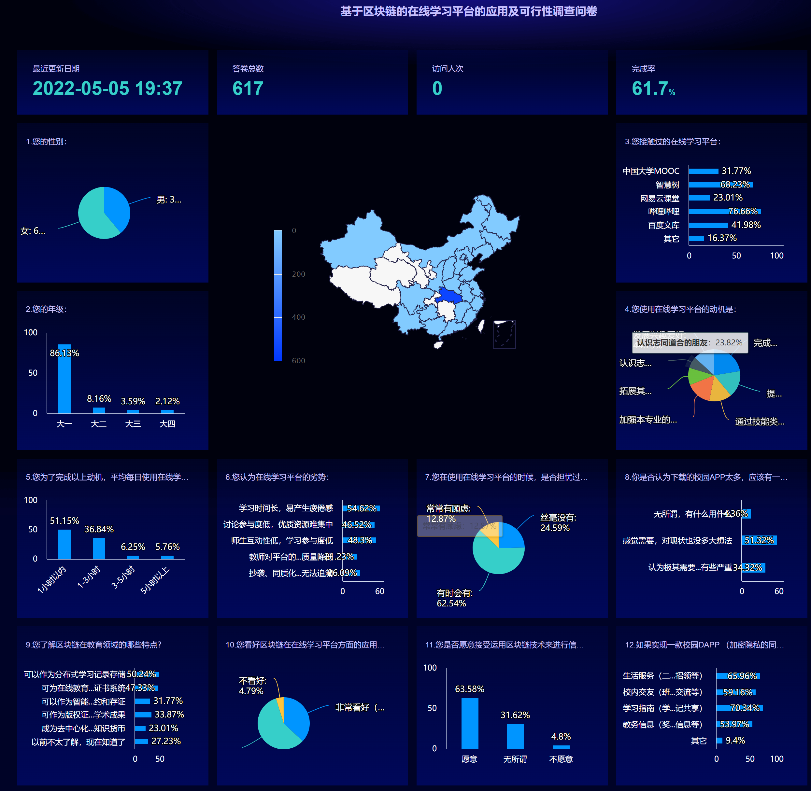
教师群体调研
在线平台劣势
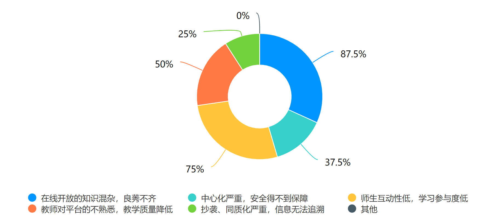
在使用在线学习平台的时候，是否担忧过自己的隐私信息被泄漏
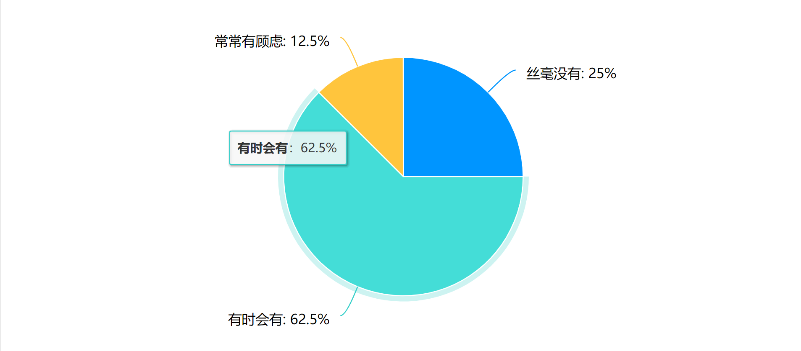
区块链作为分布式存储特点调研
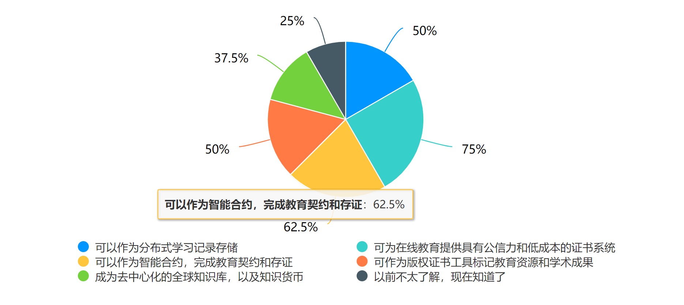
有一个地方可以分享您的数字作品和教学资源，您是否愿意使用这个平台（有激励计划类的奖励机制，我们是通过网络资源共享行为来创造出价值的，网络资源共享行为即是挖矿，同时也因为参与者贡献了自己的资源，而给予回报）
| 愿意 | 14 | 87.5% |
|---|---|---|
| 不愿意 | 0 | 0% |
| 考虑考虑 | 2 | 12.5% |
大多数老师想通过利用区块链技术保护数字出版的平台实现
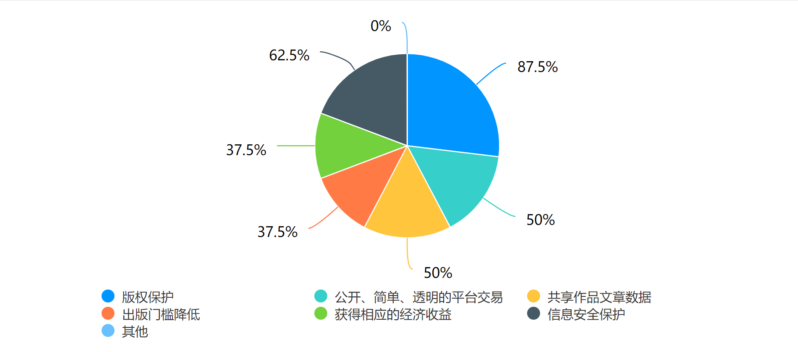
最能吸引老师使用的 Dapp 功能
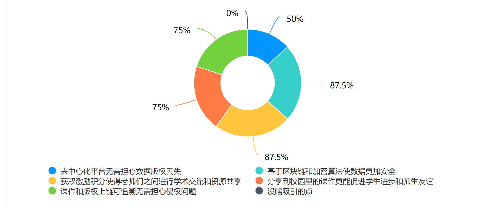
市场调研
| yours | https://www.yours.org/ | —— | 国外 |
|---|---|---|---|
| steemit | https://steemit.com/ | √ | 国外 |
| DECENT | https://decent.ch/zh/ | √ | 国外 |
| YOYOW | https://yoyow.org/ | √ | 国内 |
| Primas | https://primas.io/ | √ | 国内 |
| 币乎 | https://home.bihu.com/； https://bihu.com/ | √ | 国内 |
| 知币 | http://www.zhib.net/ | —— | 国内 |
| QunQun | http://qunqun.io/ | √ | 国内 |
| ONO | https://www.ono.chat/ | √ | 国内 |
| iVERYONE | https://ivery.one/ | √ | 国内 |
| GIFTO | https://gifto.io/#/ | √ | 国外 |
| content blockchain | https://content-blockchain.org/ | 国外 | |
| Blockchain @Media | √ | 国外 | |
| qravity | https://qravity.com/en/ | √ | 国外 |
| snapparazzi | https://www.snapparazzi.io/ | √ | 国外 |
| TRX | https://www.trx.tv/ | —— | 国外 |
| RIGHTS|TRADE | https://www.rightstrade.com/ui/Default.aspx | —— | 国外 |
| envisionx | http://envisionx.co/ | —— | 国外 |
| MadHive | https://madhive.com/ | —— | 国外 |
| AdEx | https://www.adex.network/ | —— | 国外 |
- YOYOW 在 Github 开源，是目前比较优秀的区块链 + 价值项目。
- content blockchain 是做知识分销的项目，同样开源。
- qravity 是一个优秀的，而且有创意的区块链开发团队。
- RIGHTS|TRADE 是基于区块链平台，全球领先的电影和电视版权市场。
| 序号 | 名称 | 主题内容 | 发布单位 | 单位类别 | 地域 | 发布时间 |
|---|---|---|---|---|---|---|
| 1 | 2018 中国区块链产业白皮书 | 全行业观察 | 工业和信息化部 | 政府部门 | 国内 | 2018 年 5 月 |
| 2 | 腾讯区块链方案白皮书——打造数字经济时代信任基石 | 全行业观察 | 腾讯 | 头部公司 | 国内 | 2017 年 4 月 |
| 3 | CUB 区块链白皮书 -- 构建可信社会，推行行业数字化 | 全行业观察 | CUB | 头部公司 | 国内 | 2018 年 4 月 |
| 4 | 京东区块链技术白皮书 | 京东区块链应用总结 | 京东 | 头部公司 | 国内 | 2018 年 3 月 |
| 5 | 百度：图腾区块链原创图片服务平台白皮书 | 图片版权 | 百度 | 头部公司 | 国内 | 2018 年 4 月 |
| 6 | 华大区块链白皮书 -- 数字化生命的价值交互 | 生命大数据共享 | 华大基因 | 其他公司 | 国内 | 2018 年 5 月 |
| 7 | 美图区块链方案白皮书——基于人脸技术的去中心化智能档案 | 美图智能通行 | 美图 | 其他公司 | 国内 | 2018 年 1 月 |
| 8 | 法链产品白皮书 | 法链存证 | 上海法连 | 其他公司 | 国内 | 2017 年 5 月 |
| 9 | 量子链区块链经济白皮书 | 基础支撑平台 | 量子基金会 | 基金会 | 国内 | 2017 年 2 月 |
| 10 | 亿书白皮书 v2.0 | 数字出版行业 | 亿书 | 其他公司 | 国内 | 2017 年 |
| 11 | 智品链去中心化文创资产公链 | 文创及娱乐资产公链 | 智品链 | 其他公司 | 国内 | 2018 年 8 月 |
| 12 | A DECENTRALISED CODING MARKET PLACE | 代码服务 | CODECOIN | 其他公司 | 国外 | 2017 年 |
| 13 | FENIX.CASH WHITE PAPER | 音乐版权 | FENIX.CASH | 其他公司 | 国外 | 2018 年 3 月 |
| 14 | A Democratized Ecosystem for the Music Industry White Paper v1.0 | 音乐版权 | Tune Software | 其他公司 | 国外 | 2018 年 2 月 |
| 15 | Photochain Whitepaper v0.9 | 图片版权 | Photochain | 其他公司 | 国外 | 2017 年 |
| 16 | ishook White Paper | 数字出版行业 | ishook | 其他公司 | 国外 | 2017 年 |
| 17 | Reporter Community The blockchain based news provider | 记者社区：消灭假新闻 | Reporter Community | 其他公司 | 国外 | 2017 年 |
| 18 | Blockchain-powered daily fantasy sports Whitepaper | 体育粉丝经济 | MYDFS | 其他公司 | 国外 | 2018 年 4 月 |
| 19 | 区块链必须做对的五件事情 | 咨询报告 | D+H | 其他公司 | 国外 | 2015 年 |
| 20 | 区块链产业及知识产权态势研究 | 咨询报告 | —— | 其他公司 | 国内 | 2017 年 |
区块链
近两年来，我们欣喜地看到中国的产业区块链正在蓬勃兴起。 首先，从中央到地方相继出台多项扶持政策，区块链行业正在迎来一个前所未有的发展机遇， 如 2021 年 6 月由工信部、中央网信办联合发布的《关于加快推动区块链技术应用和产业发展的指导意见》等； 其次，区块链的产业生态更加繁荣，越来越多的企业包括大型央企及国企都已加入到产业区块链的建设中； 与此同时，区块链已经在多个产业里解决具体的商业问题，大规模应用正在出现。
教育行业
当前在追求规模和质量的同时，提高 “开放” 和“公信”，对教育的发展具有十分重要的意义。2016 年 9 月教育部印发的 《关于推进高等教育学分认定和转换工作的意见》中提出试行各类高等学校之间学分转换，建立个人学习账号和学分累计制度，畅通继续教育、终身学习通道等目标。但是完成这些建设目标，需要一个集安全性、分布式、透明性于一体的学分记录体系。
而近两年来兴起的区块链技术恰好具备这样的能力。
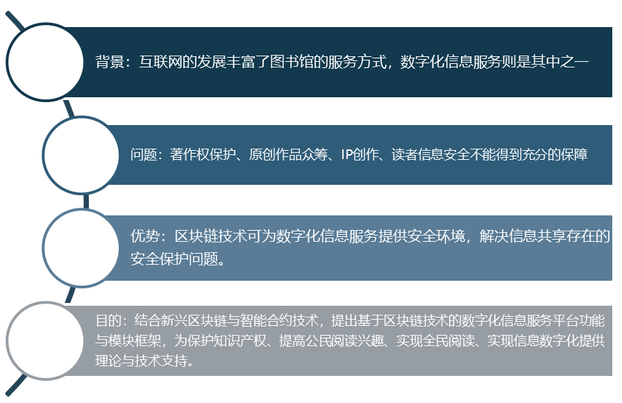
我们存在的意义
• 我们开启这个项目的意义在于教育效率、教育优化、教育可追溯、教育价值提升过程，远程教育行业内的创新应用价值选择
• 这项技术在教育领域可以
①作为分布式学习记录存储
②可为在线教育提供具有公信力和低成本的证书系统
③可以作为智能合约，完成教育契约和存证
④可作为版权证书工具标记教育资源和学术成果；
发展规划
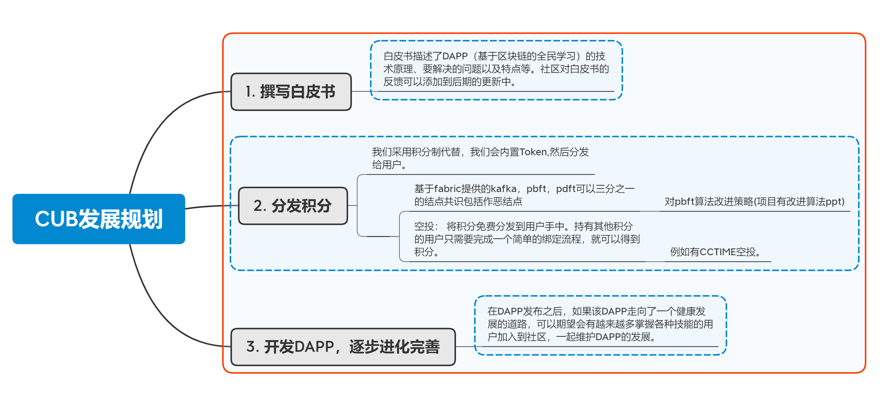
校企合作
利用区块链的分布式和可追溯性保障数据安全
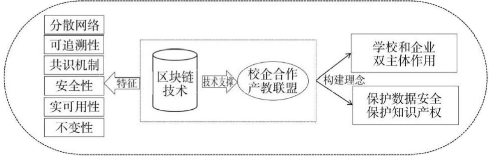
高校应用场景
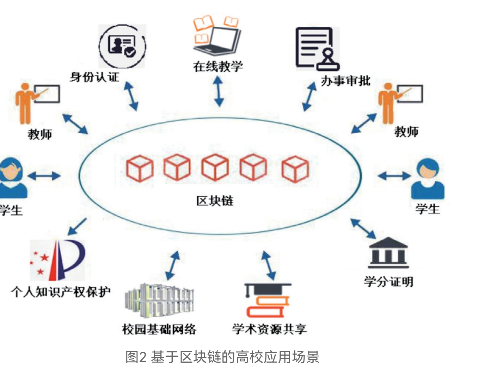
技术架构
产品设计

产品介绍
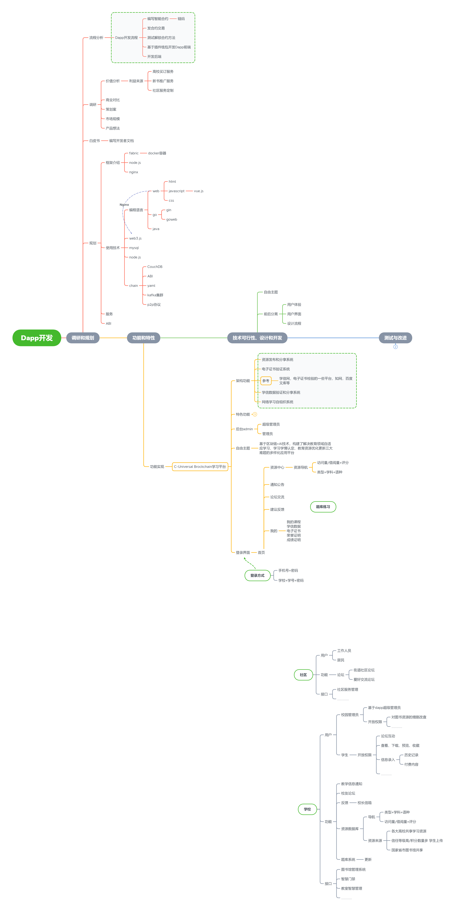
产品架构
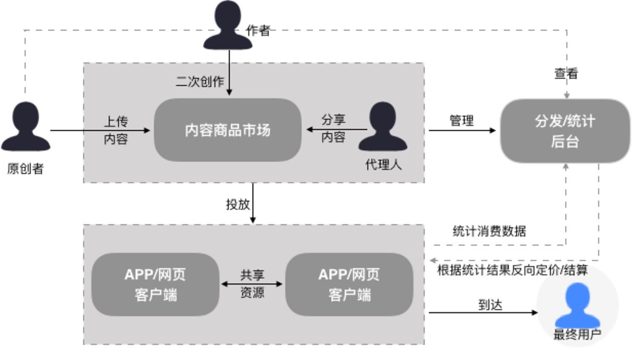
对于中小企业客户或者个人老师、学生来说，CUB 平台扮演三个角色： 第一个是内容的存储功能。第二个是内容的分发功能。第三个是内容的定价和结算功能。
中小企业混合 DAPP 的使用场景：拥有大量用户的某在线教育品牌 A 公司在自有后台内容管理系统直接增加了发布到 CUB 平台的快捷入口。同时为了支持 CUB 视频的使用情况，A 公司用 CUB 播放器（支持播放 CUBass 上的视频且向 CUBaas 同步播放次数的网页 / APP 播放器）对原有 APP 进行了升级改造。
CUB 垂直门户定义：基于 CUBaas 内容的内容索引垂直门户。CUB 垂直门户的使用场景：某垂直行业媒体 “医学快播网 “把 CUB
平台上所有的精品教育视频进行聚合，打造了一个面向大众的精品学习门户。
CUB 客户端定义：接入 CUB 平台的官方 APP 应用。
CUB 客户端的使用场景：某些用户通过官方 CUB 客户端共享存储空间和网络带宽获取 CUB 平台奖励。例如积分奖励…….
CUB 网页应用定义：内嵌代码能够实现 CUBaas 内容浏览和同步数据到 CUBaas 的 Web 网页。
CUB 网页应用的使用场景：比如一个公众号文章，里边能播放 CUBaas 上的视频，同时能同步播放数据到 CUBaas。
CUB 相关服务定义：指为了提高 DAPP 或者 CUB 门户使用 CUB 平台的效率，提供的辅助适配功能（比如：内容检索、内容搜索）
产品功能
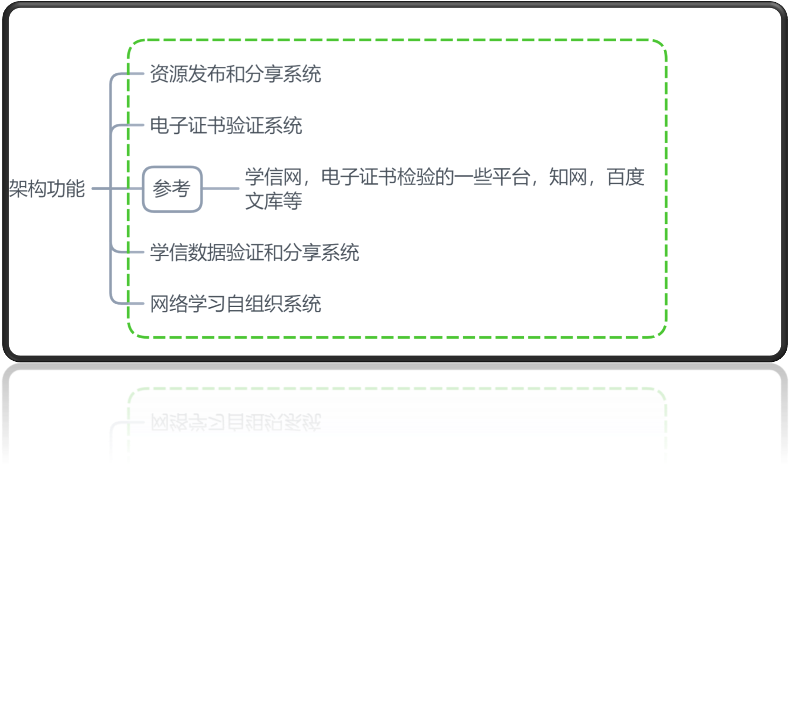
Teek 平台的资源和服务包括内容、存储、带宽、记账、律师、结算、认证。主要的经济行为
包括上传视频、发布视频、观看视频、创建合约、流通记账、执⾏合约、终端分享资源、实名注册。
CUB 积分的消耗和获取
（1） CUB 积分的消耗
消耗资源和服务的行为需要付出 CUB 积分。以在发布视频为例，需要占 CUB 存储空间（ipfs)，所以需要扣 CUB 积分。
知识的提供者发布知识内容（存储空间），需要消耗积分；知识的传播者接受知识内容，需要消耗积分，知识的传播者在接受知识并进行传播也需要消耗积分；知识的消费者接受知识内容需要消耗积分。
（2） CUB 积分的获取
两种获取方式：提供资源和服务的行为或者通过法币购买。
CUB 平台的信用规则
“CUB” 采取先使用后分配结算的交易模式。在没有付费之前，用户凭借自己的信用就可以进行内容消费。在结算时，需要保证用户有足够的 CUB 积分进行交易。
为了推动 CUB 的起步，新用户实名认证后给出信用额度（包括空投之类的，可以参考我们的计划书以及规划的脑图）。
web 网站前端
视频地址精准空投🖱️
超级账本 Hyperledger fabric
Hyperledger fabric(超级账本) 和 Ethereum 对比
超级账本是 Linux 基金会的一个开源的联盟链项目，基于 fabric 作为区块链底层，我们在应用层实现对应功能。同样因为 fabric 的共识算法在 peer>100 结点后成指数型增长，我们对其 PBFT 共识算法进行改进。
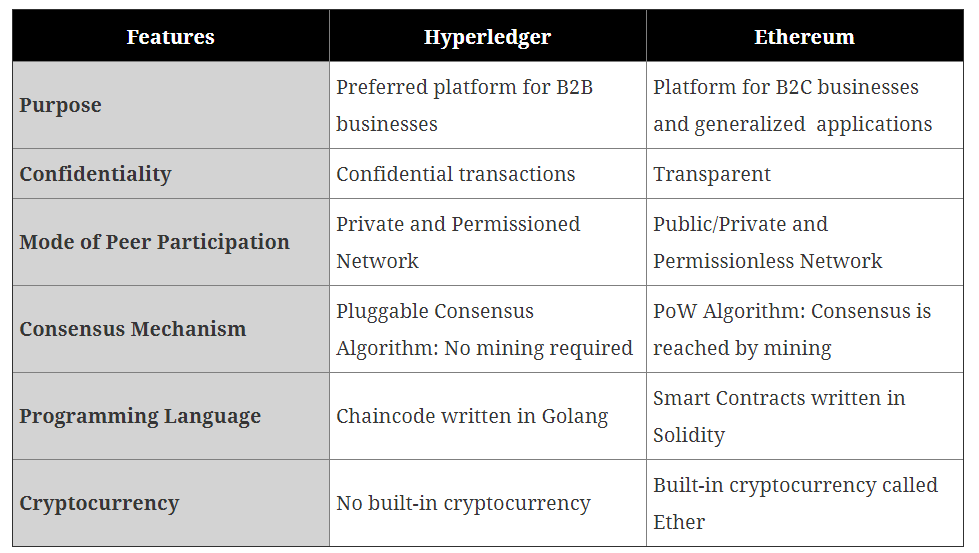
实现需求
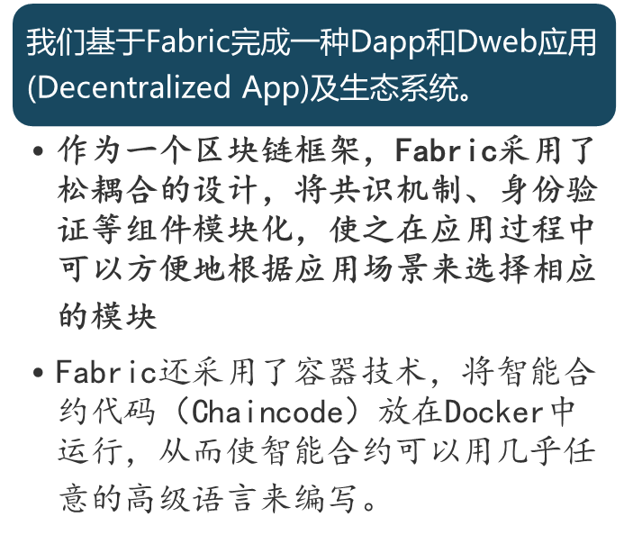
Hyperledger Fabric 是一个架构，里面有很多可替换的架构性组件。组件很多都有完整的实现，我们没有必要另造轮子。
存储协议 IPFS
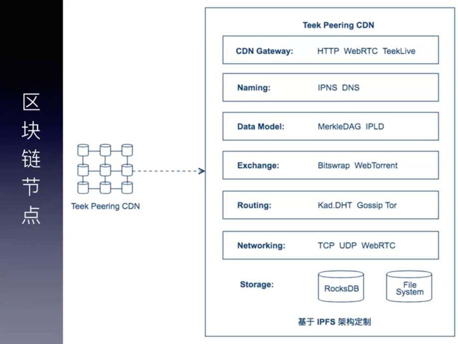
命名层：为了方便识别资源和屏蔽具体访问路径，命名层有个 IPNS 协议。IPNS 的原理是从域名的 TXT 记录里获取 IPFS 哈希地址，然后根据这个哈希地址从 IPFS 网络中获取数据。
数据模型：具体文件数据结构是 MerkleDAG，同时遵守 IPLD 协 议。IPLD 定义了基于内容寻址的统一数据结构类型。它是一个转换 器，可以把现有的异构的数据结构（基于内容寻址）统一成一种格式， 方便不同系统之间的数据交换和互操作。
交换层：IPFS 在 BitTorrent 的基础上实现了 p2p 数据交换协议：
BitSwap 协议，增加了信用和帐单体系来激励节点去分享。一个在后端（BitSwap， 一个在前端，双层 p2p 机制）。
参考 IPFS 星际文件传输协议，使用到 git、DHT、SFS、bitTORRENT，目标是成为一个全球统一区块链系统，对于我们版权或者资料分享链来说，不可能把所有数据都放在区块链上，而是可以选择把数据放在 IPFS 中，取 HASH—1，将 hash 存在区块链中。借助 git 实现，将文件分层若干个小部分，构成 DAG，DAG 根结点就是文件的 hash 值，修改文件只需要修改少数的结点。
熟悉 github，进程使用 git 的伙伴应该知道 git 的版本控制是多么优秀，IPFS 也不例外。
PBFT 算法改进策略
Github 项目地址：https://github.com/3293172751/Block_Chain/blob/master/blockchain/README.md
上面提到我们是以积分作为策略的，来进行平台数据流通媒介。
常见的共识算法对比
| RAFT | 算法复杂度低，容易达成共识 | 只能抵抗非拜占庭攻击 | 以少数服从多数的投票机制来达成共识，即达成的共识有大多数节点的参与 |
|---|---|---|---|
| PBFT | 支持容错拜占庭攻击扩容性强 | 达成共识要求的时间长，算法复杂度高 | 以少数服从多数的投票机制来达成共识，即达成的共识有大多数节点的参与 |
| PoW | 算法简单，安全性强 | 浪费大量资源，共识周期长 | 通过算力控制或者是股权控制来达成目的，对于大多数节点来说，只是接受了共识结果而没有真正意义上实现系统的共识 |
| PoS | 性能高，容易达成共识 | 安全性不足，容易形成垄断 | 通过算力控制或者是股权控制来达成目的，对于大多数节点来说，只是接受了共识结果而没有真正意义上实现系统的共识 |
针对 PBFT 的改进
目前业界多以实用拜占庭容错 PBFT 共识为主要方式，虽然可满足基本应用，但是这种方法性能提升难度大 （当前 CUB 最高调优可达 1.3 万左右的 TPS 能力），且存在通信复杂度过高的问题。 RAFT 共识效率虽高但无法容忍拜占庭错误。CUB 区块链将 RAFT 共识与可信执行环境相结合，利用可信执行环境防止了拜占庭错误的发生，有效的提升了 RAFT 共识的安全性。同时 CUB 区块链对交易内容进行压缩瘦身，可以达到单链 10 万 TPS 的吞吐量。此外，采用 CUB 改进后的 PBFT 方案，可实现区块链 TPS 近线性增长。
对于单个联盟区块链网络来说，通常会采用拜占庭容错的共识算法，但随着共识节点数量的增多，节点之间需要交换的信息显著增加，使得系统和网络通信量增大， 造成联盟链整体性能下降，因此，通常单个联盟链网络的规模都不大。 我们在 Fabric 的性能提升方面进行了多个方向的研究，包括创新的交易机制、分片并行扩展、高性能的共识算法、高效的智能合约引擎，以及软硬件的协同优化。 在面对业务并发诉求越来越大的压力下，单个区块链的性能在通过分片、多链等方式可以在部分场景中大幅提高交易的并发能力。在不同的业务中，需要考虑选用适 合于业务的分片策略，减少跨片的交易数量，避免跨片交易带来的性能损失。 在联盟链高吞吐量的情况下，存储面临的压力也会更加凸显。假设每笔交易实际承载 的内容为 200B，加上交易的签名、数字证书等其他数据，按 20000 TPS 的交易平均吞吐量计算，每秒将产生 20MB 以上的数据量，一天就会累积达到 1.7TB，一年将达到 630TB。如此庞大的数据量对于各联盟链组织来说，将会带来很大的负担，因此通过账本数据的分布式存储 (IPFS)、数据归档和老化、轻节点 (无需存储整个账本）等方式减少数据量，将成为应对存储压力的主要方向。

将在 Ubuntu20.04 系统搭建 Hyperledger Fabric 平台部署区块链自定义共识后端，使用 golang 语言设计改进的 PBFT，并进行测试。
测试环境：docker
Docker 之前有尝试过 redis 三主三从，扩容和缩容就目前掌握技术来说最方便，同时使用 - P 随机端口实现上百台机器分布式集群。
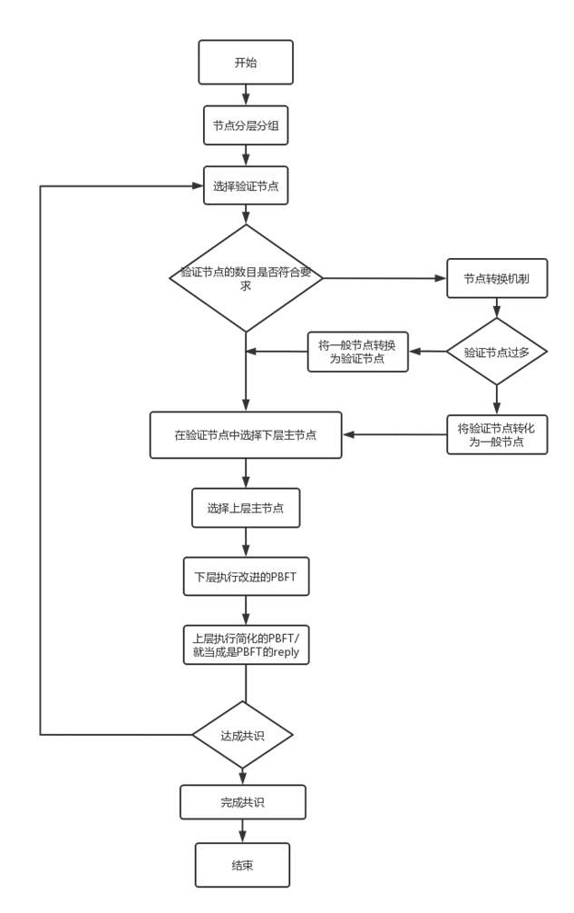
算法复杂度：
在 CUB 社区节点数量较多时，一般的 PBFT 算法的共识时间会大大增加，并且共识失败的概率会增加。而分层的 PBFT 算法的共识时间不会有大幅增加并且能够保证共识成功的概率。
时延：
通过达成共识所需的时间进行测试，并与原始 PBFT 进行对比。（具体的关注我们 github 组织）
和传统 APP 对比我们的优势

传统的 APP 和我们的 DAPP
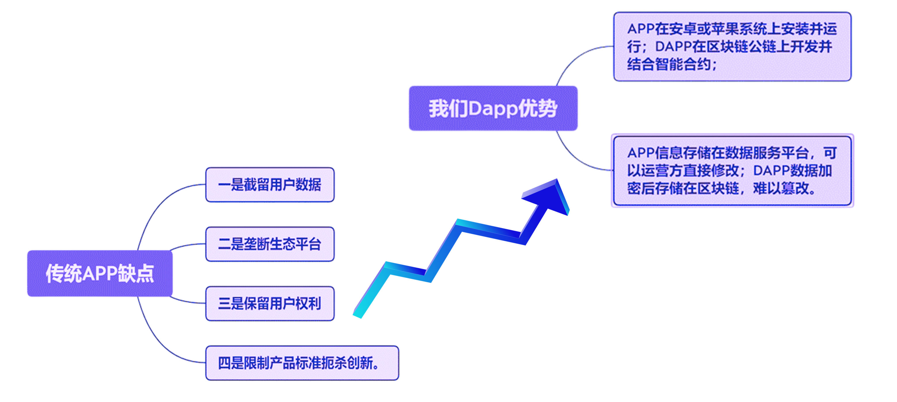
区块链的架构
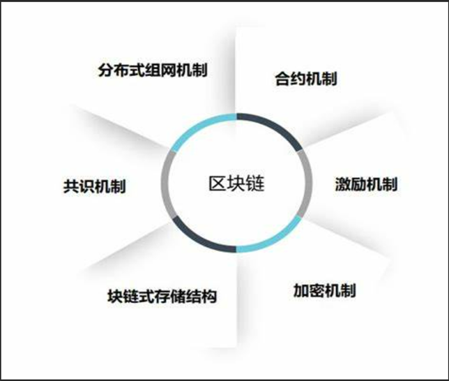
我们是以积分作为奖励，每一个结点都是该系统的构造者，每一个作品的发表都能赚取积分，积分达到一定程度就可以参与作为共识结点参与共识！积分越高权限越高。
当积分过低的时候就会影响征信。当发现有侵权文献，我们对其入链，将侵权行为永远留在链内。
目前国内外一些常见的 DAPP
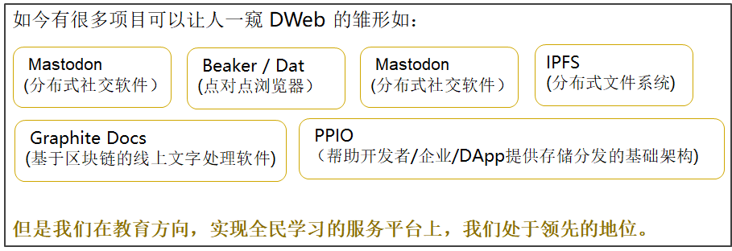
营销策略
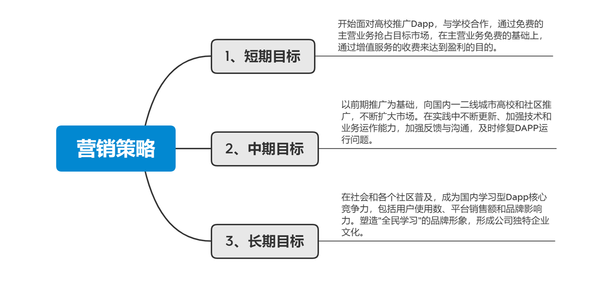
案例：优秀的作者以及科研者的坚强后盾
基于我们平台版权作品保护，打造内容存证，授权，维权整套流程，对于上传学习的作者，学习的学者，提供链上数据保护机制，链上数据的记录。极大的提升著作权保护效率，让盗版不再嚣张，发行和学习更安心。
🎞️应用场景
区块链典型应用
场景 1：校园网络安全保护
在高校基础网络应用设施建设中，利用区块链技术能很好解决部分校园网络安全问题，例如解决核心网络基础设施 DNS 系统的易受攻击问题。
利用区块链技术的不可篡改特性，将域名和 IP 地址对应关系的 “增”“删”“改” 记录在区块链中，可以在全网达成共识，不可篡改，形成交易记录层。解析地址和真实 IP 地址的对应关系就是客观存在的智能合约，并记录在数据库中
场景二：学术资源共享
高校拥有众多优质在线教育与学术科研资源，不能跨校跨联盟分享。利用区块链 的智能合约可以简化认证过程，将校内和校外优质资源进行整合，形成学术资源区块链联盟，师生可以跨区域在任一区块链资源节点获取联盟内共享学术资源。
同时，区块链的分布式结构使得所有共享的学术资源不会因为某一个区块链节点 故障而无法提供服务，消除单独故障，保障了整个学术区块链的数据资源安全性与完整性。
场景三：学分证明信用体制建设
在校学生的课程成绩、学分、项目、科研情况等各种学习数据先经标注时间戳标签，并分布式存储在学分证明区块链节点中，经授权的第三方机构或用人单位可以在 任意区块链节点中查看学生的学习情况，一方面可以保证学生履历的权威性，一方面利用分布式结构可以降低各高校信息化建设成本，同时保障数据的安全性
场景四：身份认证管理
将高校各种应用平台组成应用联盟区块链，各平台之间通过在线协作共同维护联 盟区块链，每个平台成员自身数据变动时，通过区块链分布式结构自动通知和同步其 他应用平台成员，当高校师生用户在某平台登录成功后，其他平台同步信用授权认证数据，当用户访问联盟区块链内其他平台时，不需要重复认证。
场景五：高校知识产权保护
知识产权保护由于传统登记方式的局限性，存在确权难、盗版严重、公开性差等 诸多问题，利用区块链的数字签名在原作与所有权信息之间建立无法篡改的对应关系，高校作者把专利、软件著作权等作品发布到知识产权区块链数据库时生成唯一私钥作为作品所有权的证明，在区块链上生成唯一真实的且不可篡改的存在性证明，从作品的产生、版权转让等每一步都能自动记录保存且不可篡改。
📡联系我们
企业微信 c_universal_brockchain@nsddd.top
Github 社区
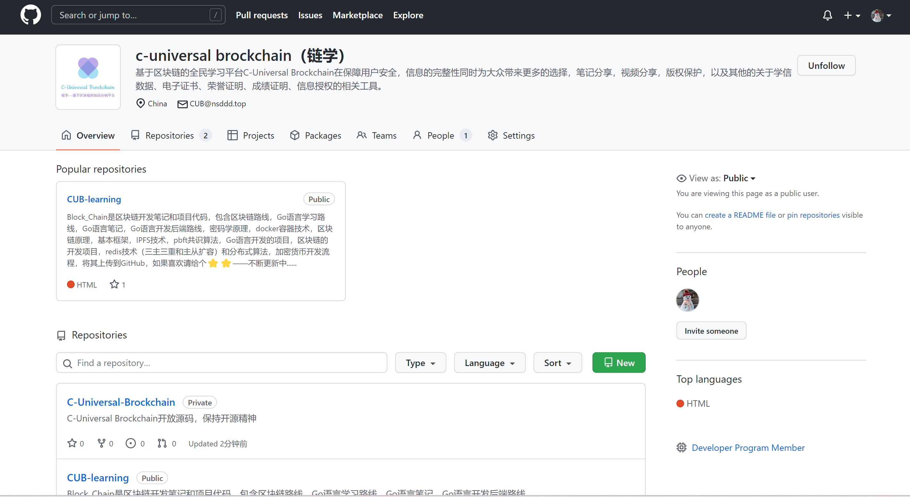
知乎：链学者社区
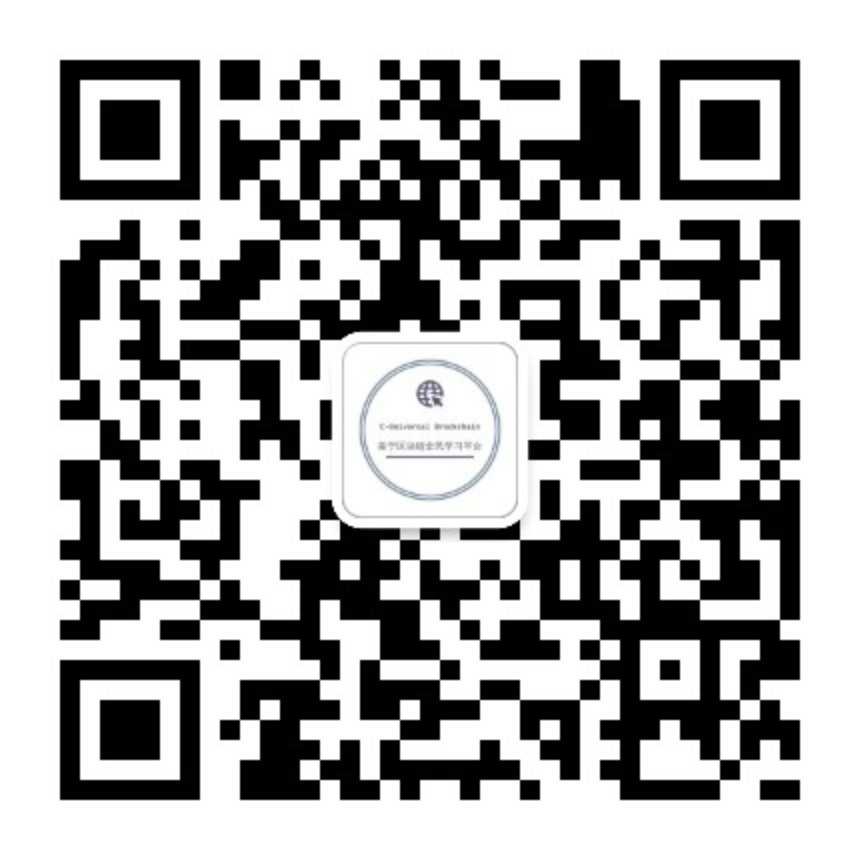
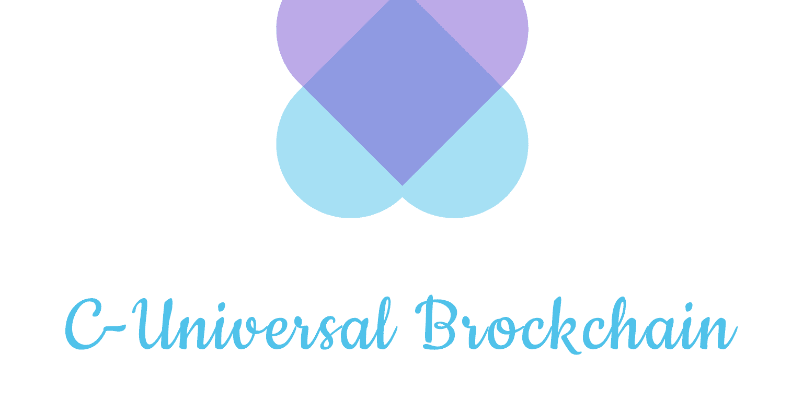